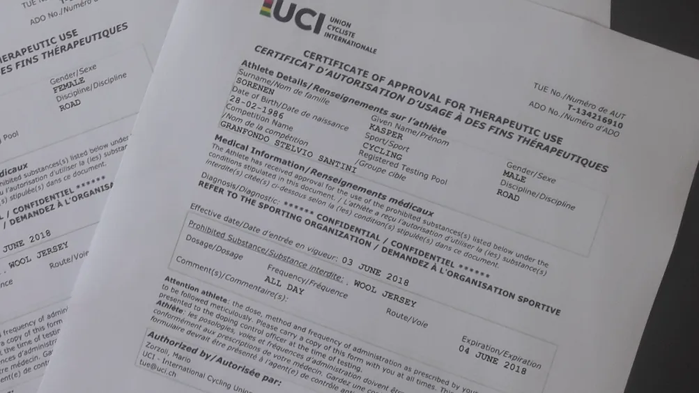

B R E A K I N G: UCI redder Squadra Molteni fra udelukkelse af Granfondo Stelvio Santini.

Taskerne er pakket, cyklerne er nypudset og Squadra Molteni er klar til at rejse til Italien. Og så kommer bomben: En besked fra arrangørerne af Granfondo Stelvio tikker ind:
“Please let me remind you that the use of the race pack jersey is compulsory during our granfondo, so you won’t be allowed to use your wool jerseys”
Hvad …???
Granfondo Stelvio Santini har i deres egne regler for løbet intet om, at det er obligatorisk at køre i deres jersey. Og i den netop udsendte mail, hvori der er en race-booklet med div oplysninger, står der heller intet om den obligatoriske jersey. Kun et stykke nede i nævnte mail, som deltagerne altså får under én uge før løbet, står der:
“We kindly remind you that the use of the race jersey, that you will find in your race pack, is compulsory to participate in the Granfondo Stelvio Santini”
Og for ligesom at gøre det hele mere farceagtigt, fortsætter afsnittet:
“If you do not wear the race jersey you will not receive the Finisher cycling cap at the finish on top of the Stelvio”
-Hvad hede hule helvede …! Jamen … Jeg har simpelthen aldrig kendt mage!, lyder det fra Kaptajn Bjørnsteen.
Jeg måtte omgående ringe til en god ven i UCI, som jeg traf på en våd landlov i Rangoon engang i 80’erne … Og jeg har nu modtaget uld-TUE-tilladelser til hele holdet. Så der dén ged barberet.

VI KØRER I ORANGE ULD.
FORZA MOLTENI